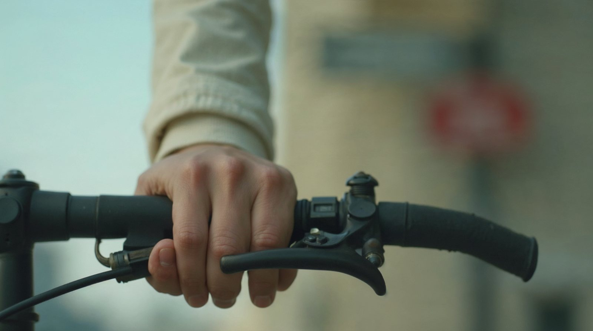
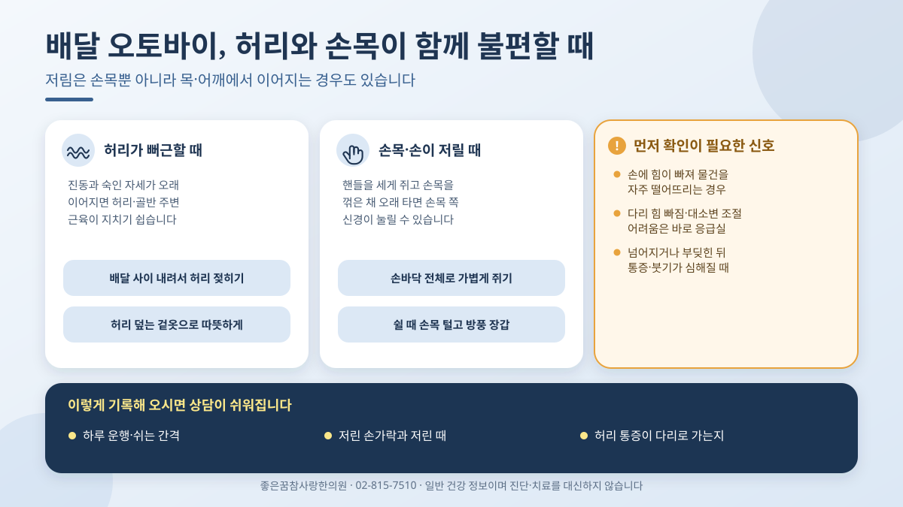

이종호 한의사 감수좋은꿈참사랑한의원 대표원장 (한의사 면허번호 19769)발행 2026-11-24 · 수정 2026-11-24
이 글의 차례
배달 사이 잠깐 내려 허리를 펴고 손목을 털어 주며, 핸들을 손바닥 전체로 가볍게 쥐는 습관이 허리와 손의 부담을 나누는 기본입니다. 노량진과 상도동, 흑석동 일대 언덕길을 하루 종일 오르내리는 배달 기사분들께서는 저녁이 되면 허리가 뻐근하고 핸들을 쥐던 손이 저리다고 하시고, 비 오는 날이나 겨울에는 몸이 더 굳는다는 분도 있습니다.
손에 힘이 빠져 물건을 자주 떨어뜨린다면 먼저 확인이 필요합니다.
왜 이런 불편이 생길 수 있나요
- 오토바이의 진동과 앞으로 숙인 자세가 오래 이어지면 허리와 골반 주변 근육이 지치기 쉽습니다.
- 핸들을 세게 쥐고 손목을 꺾은 채 오래 타면 손목 쪽 신경이 눌려 저림이 생길 수 있습니다.
- 추운 날씨와 비는 몸을 움츠리게 해 근육 긴장을 더 키우기도 합니다.
- 목과 어깨가 굳으면 팔과 손으로 이어지는 저림으로 느껴지는 경우도 있습니다.
먼저 이렇게 여쭙니다
- 하루 운행 시간과 쉬는 간격은 어느 정도인가요?
- 손 저림은 어느 손가락에 오고, 운행 중인가요, 밤에 자다가인가요?
- 허리 통증이 다리로 내려가거나 당기는 느낌이 있나요?
- 핸들을 쥘 때 손목을 많이 꺾는 편인가요?

일상에서 먼저 해 볼 수 있는 것
- 배달 사이사이 오토바이에서 내려 허리를 뒤로 천천히 젖히고 손목 털기
- 핸들은 손바닥 전체로 가볍게 쥐고 손목이 꺾이지 않게 하기
- 겨울에는 방풍 장갑과 허리를 덮는 겉옷으로 몸이 차지 않게 하기
- 하루 운행이 끝나면 따뜻한 물로 씻고 손목과 허리 가볍게 풀기
한의원에서 함께 살필 수 있는 경우
- 손 저림이 반복되는 경우 손목과 목, 어깨를 함께 살펴 어느 쪽에서 오는지 넓게 확인합니다.
- 허리 뻐근함이 오래가는 경우 허리와 골반, 앉는 자세를 함께 살핍니다.
- 운행 시간이 길어 식사와 잠이 불규칙한 경우 생활 리듬을 함께 살핍니다.
좋은꿈참사랑한의원에서는 아픈 곳과 함께 주변 관절과 자세까지 넓게 살피고, 필요하다고 판단될 때 초음파로 확인합니다. 침·약침·추나·온열 가운데 지금 상태에 맞는 방법을 정하고, 귀가 전에는 일상에서 조절할 동작과 다음에 확인할 점을 알려 드립니다.
이렇게 기록해 오시면 상담이 쉬워집니다
- 하루 운행 시간과 쉬는 간격, 주로 다니는 길(언덕 여부)
- 저린 손가락과 저림이 생기는 때(운행 중, 밤에 자다가)
- 허리 통증이 다리로 내려가는지
- 최근 넘어지거나 부딪힌 일
이런 증상은 먼저 확인이 필요합니다
- 손에 힘이 빠져 물건을 자주 떨어뜨리는 경우
- 다리에 힘이 빠지거나 대소변 조절이 어려운 경우(바로 응급실)
이런 신호가 있으면 한의원보다 가까운 병원이나 응급실을 먼저 찾으세요.

여쭙는 것
- 하루 운행 시간과 쉬는 간격은 어느 정도인가요?
- 손 저림은 어느 손가락에 오고, 운행 중인가요, 밤에 자다가인가요?
- 허리 통증이 다리로 내려가거나 당기는 느낌이 있나요?
생활에서 해 볼 것
- 배달 사이사이 오토바이에서 내려 허리를 뒤로 천천히 젖히고 손목 털기
- 핸들은 손바닥 전체로 가볍게 쥐고 손목이 꺾이지 않게 하기
- 겨울에는 방풍 장갑과 허리를 덮는 겉옷으로 몸이 차지 않게 하기
한의원에서 함께 살필 것
- 손 저림이 반복되는 경우 손목과 목, 어깨를 함께 살펴 어느 쪽에서 오는지 넓게 확…
- 허리 뻐근함이 오래가는 경우 허리와 골반, 앉는 자세를 함께 살핍니다.
- 운행 시간이 길어 식사와 잠이 불규칙한 경우 생활 리듬을 함께 살핍니다.
먼저 확인이 필요한 신호
- 손에 힘이 빠져 물건을 자주 떨어뜨리는 경우
- 다리에 힘이 빠지거나 대소변 조절이 어려운 경우(바로 응급실)
한눈에 보는 표
| 구분 | 핵심 |
|---|---|
| 여쭙는 것 | 하루 운행 시간과 쉬는 간격은 어느 정도인가요? 손 저림은 어느 손가락에 오고, 운행 중인가요, 밤에 자다가인가요? |
| 생활에서 해 볼 것 | 배달 사이사이 오토바이에서 내려 허리를 뒤로 천천히 젖히고 손목 털기 핸들은 손바닥 전체로 가볍게 쥐고 손목이 꺾이지 않게 하기 |
| 한의원에서 함께 살필 것 | 손 저림이 반복되는 경우 손목과 목, 어깨를 함께 살펴 어느 쪽에서 오는지 넓게 확인합니다. 허리 뻐근함이 오래가는 경우 허리와 골반, 앉는 자세를 함께 살핍니다. |
| 먼저 확인이 필요한 신호 | 손에 힘이 빠져 물건을 자주 떨어뜨리는 경우 다리에 힘이 빠지거나 대소변 조절이 어려운 경우(바로 응급실) |
자주 묻는 질문
저림이 밤에 더 심한데 괜찮을까요?
밤에 손이 저려 깨는 경우는 손목 쪽 신경이 눌리는 경우도 있어 진찰 때 함께 확인하고, 필요하면 다른 의료기관 검사를 안내합니다.
일하면서 할 수 있는 스트레칭이 있나요?
배달 사이 1~2분 동안 할 수 있는 허리 젖히기와 손목 풀기를 진료 때 함께 정해 드립니다.
장갑을 두껍게 끼면 저림이 줄까요?
추운 날 손이 차가워지지 않게 하는 데는 도움이 되지만, 너무 두꺼우면 핸들을 더 세게 쥐게 될 수 있습니다. 손에 맞고 미끄럽지 않은 방풍 장갑을 권합니다.
진료 시간은 어떻게 되나요?
좋은꿈참사랑한의원은 평일 09:30~20:00(점심 13:00~14:00), 토·일·공휴일 09:30~15:00에 진료합니다.
좋은꿈참사랑한의원은 재진 때 지난번 이야기부터 이어서 여쭙니다. 진료시간과 예약은 오시는 길에서 확인하세요.
어디서 상담받을 수 있나요?
좋은꿈참사랑한의원은 서울 동작구 만양로2길 2 신성빌딩 3층·5층(서울 동작구 상도동, 7호선 상도역 3번 출구 근처)에 있습니다. 한의사 3명(이종호 대표원장, 조영기 수석진료원장, 정원영 진료원장)이 진료합니다. 진료시간은 평일 09:30~20:00(점심 13:00~14:00), 토·일·공휴일 09:30~15:00이며, 방문 전 전화로 확인을 권합니다. 예약은 네이버 예약, 카카오톡 상담, 전화 02-815-7510로 받습니다.
이 글은 일반적인 건강 정보이며 개인의 진단이나 치료를 대신하지 않습니다. 증상이 있거나 복용 중인 약이 있다면 진료를 통해 확인하세요. 치료 효과는 개인마다 다를 수 있습니다.
작성 기준: 일반적으로 알려져 있는 건강 정보를 참고해 정리했습니다(대표원장 감수). 증상 기록은 1~2주 동안 하루 1회, 비슷한 시간에 적어 오시면 지난 상태와 비교하기 쉽습니다.